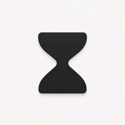

Choose your session
Set focus time, break time, rounds, and the mode that suits you.

Hourglass SupportHourglass · Support
Hourglass turns focused time into the story of a living civilization. Find quick answers for Mac, iPhone, and iPad, or contact us directly.
Set your rhythm, start a session, and let every completed round leave a visible mark.
Set focus time, break time, rounds, and the mode that suits you.
Gentle mode lets you pause. Focus mode keeps each round uninterrupted.
Completed focus rounds advance your civilization, population, and story.
Your core experience is consistent, with platform-specific tools where they make sense.
Focus timer, civilization, and optional blocking of selected apps and domains after you grant the required system permission.
A focused mobile timer with Live Activity support and your civilization close at hand. It does not block other apps or websites.
The same mobile focus experience, adapted to the larger display. It does not block other apps or websites.
The essentials, without making you search through a manual.
No. Hourglass does not require an account, sign-in, or subscription. Your focus history, settings, and civilization are stored locally on your device.
Blocking is a macOS-only feature that uses a system extension and permissions you control. The iPhone and iPad versions are designed around the timer, Live Activity, and civilization experience and do not block apps or websites.
The timer continues and the active session is restored when you return. On iPhone, a Live Activity can show the current session when the system supports it.
No. Hourglass currently keeps its data locally on each device, so progress does not automatically sync between Mac, iPhone, and iPad.
Email us with the device model, operating system version, Hourglass version, what you expected, and the steps that reproduce the issue. Screenshots are helpful when they do not contain private information.
Hourglass is designed to keep app data on your device and does not use first-party advertising or analytics. Read the Privacy Policy for the complete details.
Write to us and we will help you troubleshoot Hourglass. Support is available in English and Spanish.